概述

转到分布式版本控制系统看起来像个令人生畏的任务，但不改变已用的工作流你也可以用上 Git 带来的收益。团队可以用和 Subversion 完全不变的方式来开发项目。
但使用 Git 加强开发的工作流，Git 比 SVN 有几个优势。首先，每个开发可以有属于自己的整个工程的本地拷贝。隔离的环境让各个开发者的工作和项目的其他部分（修改）独立开来 —— 即自由地提交到自己的本地仓库，先完全忽略上游的开发，直到方便的时候再把修改反馈上去。
其次，Git 提供了强壮的分支和合并模型。不像 SVN，Git 的分支设计成可以做为一种用来在仓库之间集成代码和分享修改的『失败安全』的机制。
工作方式
像 Subversion 一样，集中式工作流以中央仓库作为项目所有修改的单点实体。相比 SVN 缺省的开发分支 trunk，Git 叫做 master，所有修改提交到这个分支上。该工作流只用到 master 这一个分支。
开发者开始先克隆中央仓库。在自己的项目拷贝中，像 SVN 一样的编辑文件和提交修改；但修改是存在本地的，和中央仓库是完全隔离的。开发者可以把和上游的同步延后到一个方便时间点。
要发布修改到正式项目中，开发者要把本地 master 分支的修改『推（push）』到中央仓库中。这相当于 svn commit 操作，但 push 操作会把所有还不在中央仓库的本地提交都推上去。
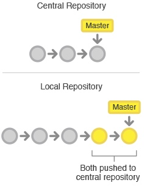
解决冲突
中央仓库代表了正式项目，所以提交历史应该被尊重且是稳定不变的。如果开发者本地的提交历史和中央仓库有分歧，Git 会拒绝 push 提交否则会覆盖已经在中央库的正式提交。
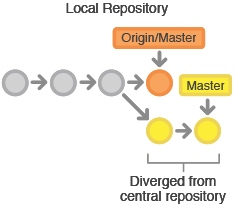
在开发者提交自己功能修改到中央库前，需要先 fetch 在中央库的新增提交，rebase 自己提交到中央库提交历史之上。这样做的意思是在说，『我要把自己的修改加到别人已经完成的修改上。』最终的结果是一个完美的线性历史，就像以前的SVN 的工作流中一样。
如果本地修改和上游提交有冲突，Git 会暂停 rebase 过程，给你手动解决冲突的机会。Git 解决合并冲突，用和生成提交一样的 git status 和 git add 命令，很一致方便。还有一点，如果解决冲突时遇到麻烦，Git 可以很简单中止整个 rebase 操作，重来一次（或者让别人来帮助解决）。
示例
让我们一起逐步分解来看看一个常见的小团队如何用这个工作流来协作的。有两个开发者小明和小红，看他们是如何开发自己的功能并提交到中央仓库上的。
有人先初始化好中央仓库
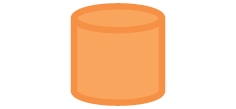
第一步，有人在服务器上创建好中央仓库。如果是新项目，你可以初始化一个空仓库；否则你要导入已有的 Git 或 SVN 仓库。
中央仓库应该是个裸仓库（bare repository），即没有工作目录（working directory）的仓库。
所有人克隆中央仓库
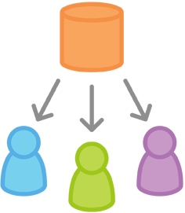
下一步，各个开发者创建整个项目的本地拷贝。通过 git clone 命令完成：
git clone https://github.com/path/to/repo.git
基于你后续会持续和克隆的仓库做交互的假设，克隆仓库时 Git 会自动添加远程别名 origin 指回『父』仓库。
小明开发功能
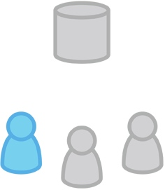
在小明的本地仓库中，他使用标准的 Git 过程开发功能：编辑、暂存（Stage）和提交。如果你不熟悉暂存区（Staging Area），这里说明一下：暂存区的用来准备一个提交，但可以不用把工作目录中所有的修改内容都包含进来。这样你可以创建一个高度聚焦的提交，尽管你本地修改很多内容。
git status # 查看本地仓库的修改状态
git add # 暂存文件
git commit # 提交文件
请记住，因为这些命令生成的是本地提交，小明可以按自己需求反复操作多次，而不用担心中央仓库上有了什么操作。对需要多个更简单更原子分块的大功能，这个做法是很有用的。
小红开发功能
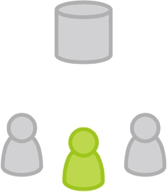
与此同时，小红在自己的本地仓库中用相同的编辑、暂存和提交过程开发功能。和小明一样，她也不关心中央仓库有没有新提交；当然更不关心小明在他的本地仓库中的操作，因为所有本地仓库都是私有的。
小明发布功能
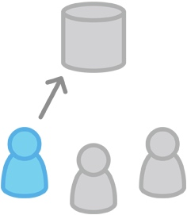
一旦小明完成了他的功能开发，会发布他的本地提交到中央仓库中，这样其它团队成员可以看到他的修改。他可以用下面的 git push 命令：
git push origin master
注意，origin 是在小明克隆仓库时 Git 创建的远程中央仓库别名。master 参数告诉 Git 推送的分支。由于中央仓库自从小明克隆以来还没有被更新过，所以 push 操作不会有冲突，成功完成。
小红试着发布功能
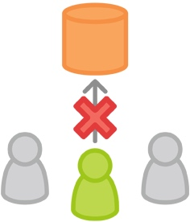
一起来看看在小明发布修改后，小红 push 修改会怎么样？她使用完全一样的 push 命令：
git push origin master
但她的本地历史已经和中央仓库有分岐了，Git 拒绝操作并给出下面很长的出错消息：
error: failed to push some refs to '/path/to/repo.git'
hint: Updates were rejected because the tip of your current branch is behind
hint: its remote counterpart. Merge the remote changes (e.g. 'git pull')
hint: before pushing again.
hint: See the 'Note about fast-forwards' in 'git push --help' for details.
这避免了小红覆写正式的提交。她要先 pull 小明的更新到她的本地仓库合并上她的本地修改后，再重试。
小红在小明的提交之上 rebase
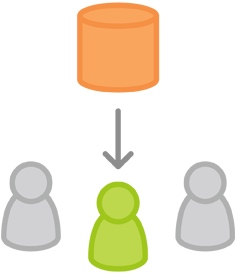
小红用 git pull 合并上游的修改到自己的仓库中。这条命令类似 svn update ——拉取所有上游提交命令到小红的本地仓库，并尝试和她的本地修改合并：
git pull --rebase origin master
--rebase 选项告诉 Git 把小红的提交移到同步了中央仓库修改后的 master 分支的顶部，如下图所示：
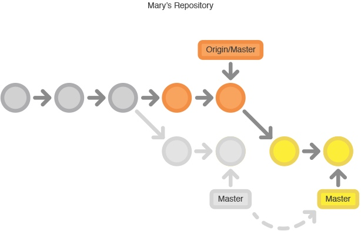
如果你忘加了这个选项，pull 操作仍然可以完成，但每次 pull 操作要同步中央仓库中别人修改时，提交历史会以一个多余的『合并提交』结尾。对于集中式工作流，最好是使用 rebase 而不是生成一个合并提交。
小红解决合并冲突

rebase 操作过程是把本地提交一次一个地迁移到更新了的中央仓库 master 分支之上。这意味着可能要解决在迁移某个提交时出现的合并冲突，而不是解决包含了所有提交的大型合并时所出现的冲突。这样的方式让你尽可能保持每个提交的聚焦和项目历史的整洁。反过来，简化了哪里引入 Bug 的分析，如果有必要，回滚修改也可以做到对项目影响最小。
如果小红和小明的功能是相关的，不大可能在 rebase 过程中有冲突。如果有，Git 在合并有冲突的提交处暂停 rebase 过程，输出下面的信息并带上相关的指令：
CONFLICT (content): Merge conflict in
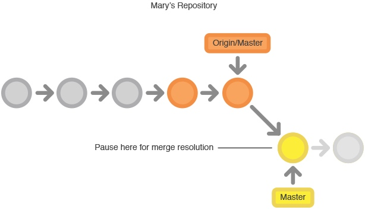
Git 很赞的一点是，任何人可以解决他自己的冲突。在这个例子中，小红可以简单的运行 git status 命令来查看哪里有问题。冲突文件列在 Unmerged paths（未合并路径）一节中：
# Unmerged paths:
# (use "git reset HEAD <some-file>..." to unstage)
# (use "git add/rm <some-file>..." as appropriate to mark resolution)
#
# both modified: <some-file>
接着小红编辑这些文件。修改完成后，用老套路暂存这些文件，并让 git rebase 完成剩下的事：
git add
git rebase --continue
要做的就这些了。Git 会继续一个一个地合并后面的提交，如其它的提交有冲突就重复这个过程。
如果你碰到了冲突，但发现搞不定，不要惊慌。只要执行下面这条命令，就可以回到你执行 git pull --rebase 命令前的样子：
git rebase --abort
小红成功发布功能
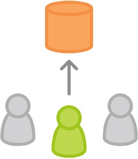
小红完成和中央仓库的同步后，就能成功发布她的修改了：
git push origin master
总结
如你所见，仅使用几个 Git 命令我们就可以模拟出传统 Subversion 开发环境。对于要从 SVN 迁移过来的团队来说这太好了，但没有发挥出 Git 分布式本质的优势。
如果你的团队适应了集中式工作流，但想要更流畅的协作效果，绝对值得探索一下功能分支工作流的收益。通过为一个功能分配一个专门的分支，能够做到一个新增功能集成到正式项目之前对新功能进行深入讨论。
本文由 Sajor
创作，采用 知识共享署名4.0 国际许可协议进行许可
本站文章除注明转载/出处外，均为本站原创或翻译，转载前请务必署名
最后编辑时间为: 2021-07-02T00:55:08+08:00